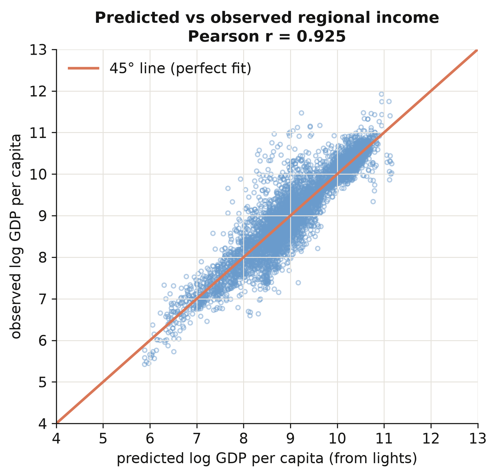
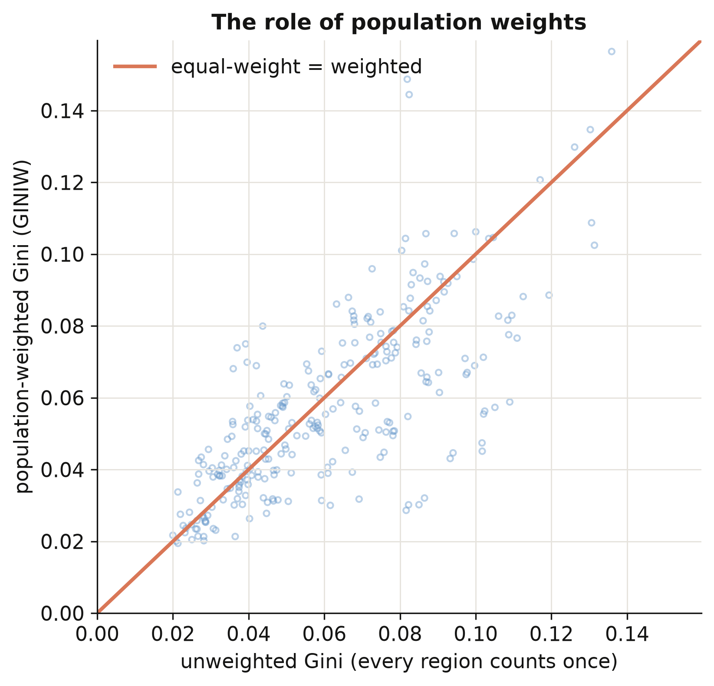
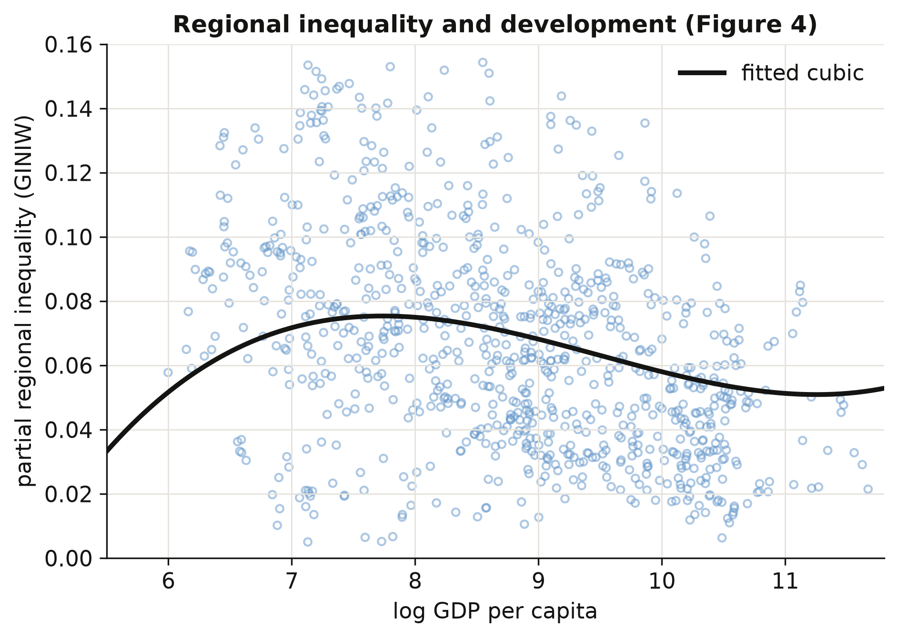
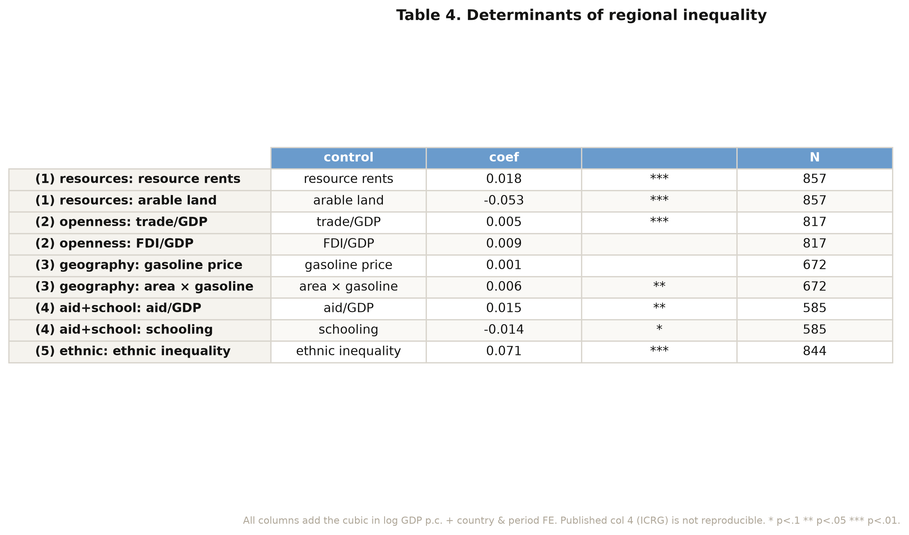
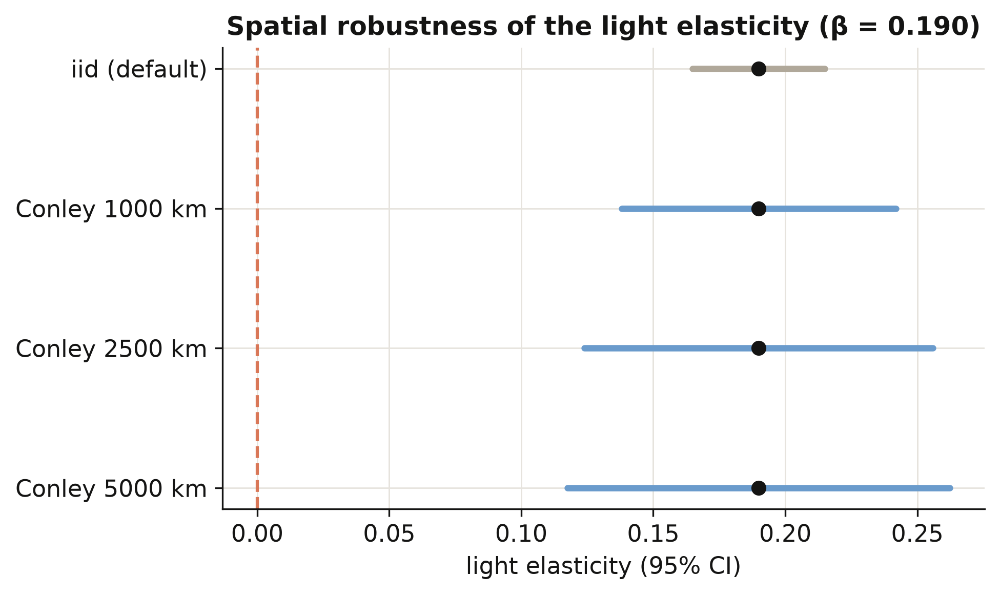

Nighttime lights become a global income map — and reveal an N-shaped Kuznets curve
Nagoya University (GSID)
July 8, 2026
Act I
A government can tell you its national GDP, but rarely the income of each province inside it.
Two countries with the same national income can look completely different on the inside — one a single booming capital ringed by poor hinterlands, the other broadly shared. Without subnational data, that gap is invisible.
Lessmann and Seidel (2017) use nighttime light as a stand-in for income: electricity, roads, and activity all glow, so brightness correlates with output where statistics do not exist.
Their pipeline, rebuilt here in Python end to end:
Act II
Mean regional Gini \(= 0.064\) (SD \(0.033\), max \(0.163\)): most countries are internally fairly equal, with a long unequal tail.
\[y_r = \beta_0 + \beta_1 \ell_r + \beta_2 g_c + \gamma' X_r + \mu_g + \tau_s + \varepsilon_r\]
A region’s log income \(y_r\) = baseline, plus elasticity \(\beta_1\) on its log light \(\ell_r\), plus a near-one-for-one adjustment \(\beta_2\) for its country’s income \(g_c\), plus geography \(X_r\), world-region \(\mu_g\) and satellite \(\tau_s\) effects. The number we care about is \(\beta_1\).
0.102
random-effects light elasticity (col 7) · national-GDP elasticity \(= 0.889\) · matches the paper exactly

Predicted vs observed log regional GDP per capita, 5,258 region-years. The scatter tracks the 45° line from the poorest regions to the richest — the calibration generalises rather than fitting one income band (\(r = 0.925\)).
Act II
\[\bar y = \frac{\sum_i w_i y_i}{\sum_i w_i}, \qquad p_i = \frac{w_i}{\sum_j w_j}, \qquad r_i = \frac{y_i}{\bar y}\]
Each country’s regional incomes \(y_i\) and populations \(w_i\) collapse to one number: the Gini, three generalized-entropy indices GE(\(-1\))/GE(\(0\))/GE(\(1\)), and the coefficient of variation — every region counting in proportion to its people.

Population-weighted vs equal-weight Gini across country-years. Most points sit below the 45° line: weighting lowers measured inequality (mean gap \(-0.0034\)) because tiny income-extreme regions lose influence (corr \(= 0.75\)).
Act III
\[\text{GINIW}_{ct} = \beta_1 \ln Y_{ct} + \beta_2 (\ln Y_{ct})^2 + \beta_3 (\ln Y_{ct})^3 + \alpha_c + \delta_t + u_{ct}\]
| Cubic term | Estimate | Sign |
|---|---|---|
| \(\beta_1\) (linear) | \(0.293\) | rises with early development |
| \(\beta_2\) (quadratic) | \(-0.032\) | then bends down |
| \(\beta_3\) (cubic) | \(0.001\) | faint upturn at the very top |
\(N = 879\), 180 countries, 5-year periods. Same sign pattern across all five indices — the N is not an artefact of the Gini.

Regional inequality (net of period effects) against log development, with the fitted cubic overlaid. The curve rises to a gentle peak near $3,000 per capita, declines through middle income, and ticks faintly upward at the top.
Act III
0.071
ethnic-Gini coefficient (\(p < 0.001\), \(N = 844\)) · vs a mean regional Gini of \(0.064\)

Determinants of regional inequality. Ethnic inequality (0.071) dwarfs resource rents (+0.018), aid (+0.015), and trade (+0.005); arable land (−0.053) is the largest equalizing force.
Act III

Conley spatial-HAC standard errors for the clean light elasticity (\(\beta = 0.190\)). The confidence interval widens with the radius — SE rises from 0.013 (iid) to 0.026/0.034/0.037 at 1,000/2,500/5,000 km — while the point estimate stays fixed and far from zero.
| Inference | SE | \(t \approx\) |
|---|---|---|
| Naive (iid) | \(0.013\) | \(14\) |
| Conley 1,000 km | \(0.026\) | \(7\) |
| Conley 5,000 km | \(0.037\) | \(5\) |
The point estimate \(\beta = 0.190\) never moves; only the honest uncertainty grows.
Objection. You absorbed country and period effects and survived a spatial-HAC test — surely development causes this inequality path?
Response. No. The lights→GDP step is a prediction model, not a structural relationship; the Kuznets and determinant regressions are within-country associations conditional on the FE, not causal effects. The income figures are predictions — accurate on average, wrong for any single unusual region.
Predict income from light · weight by people · let the curve bend twice.